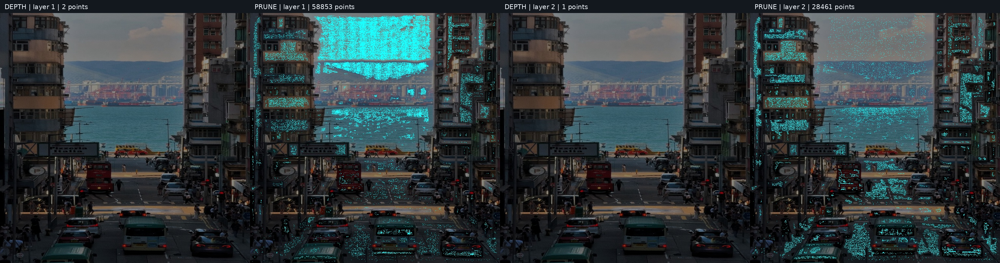
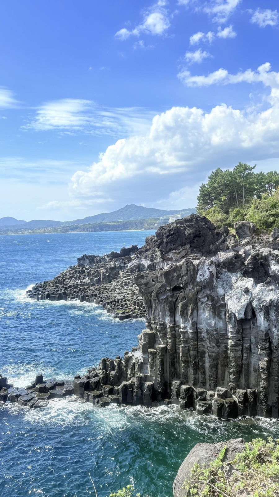
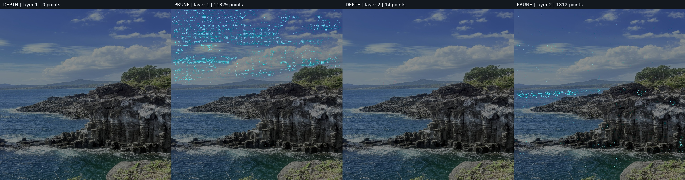
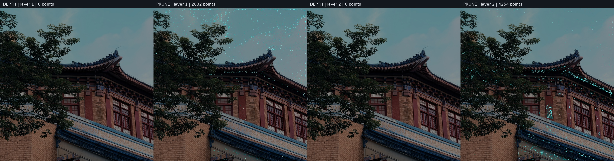
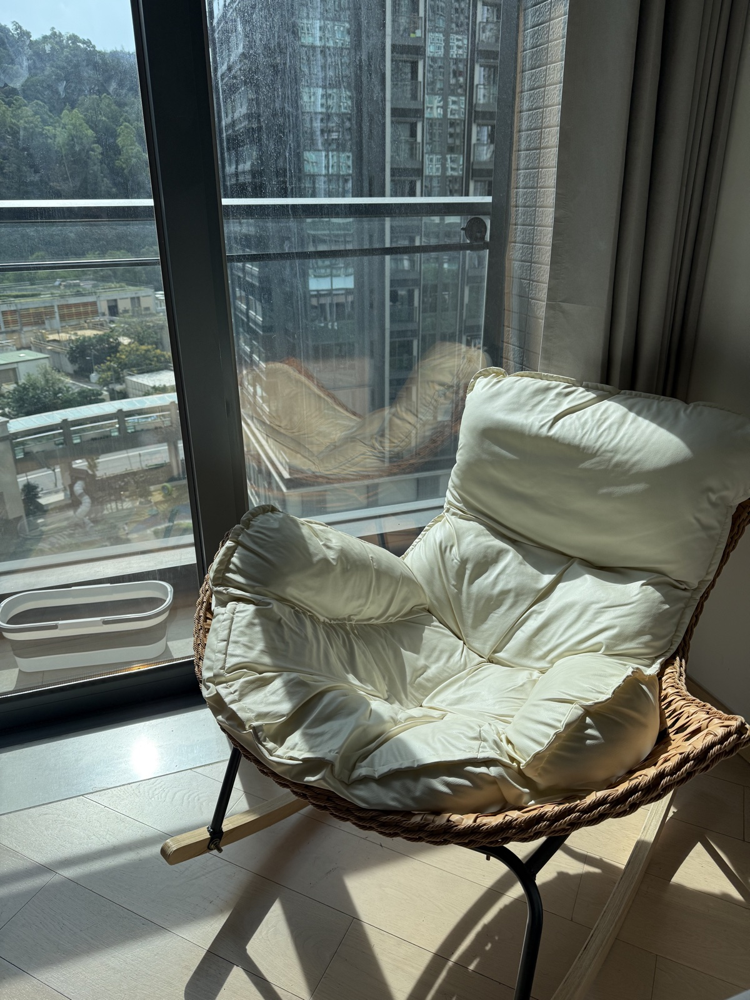
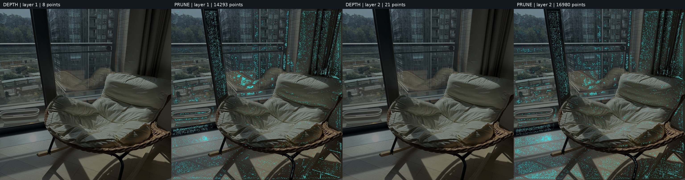
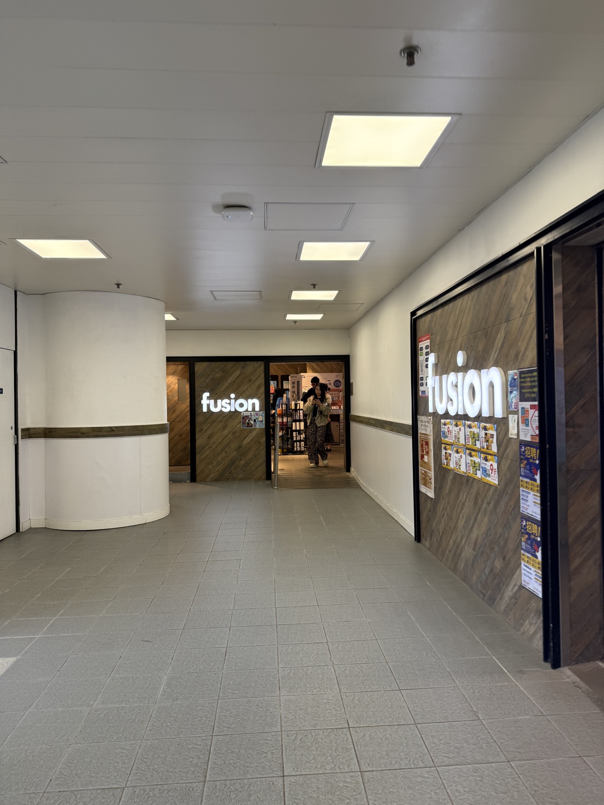
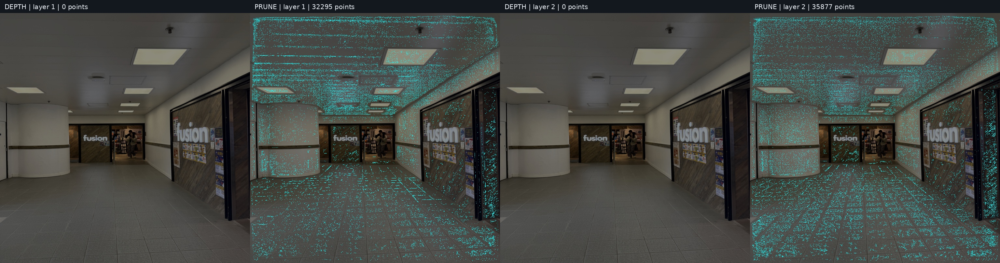

Work / COMPUTER VISION · 3D GAUSSIANS
ML-SHARP
Turning one photograph into a scene with movable viewpoints
- Deployment / post-processing
- Local experiments · baseline showcase
- PyTorch / CUDA / 3DGS
- No. 07

Behind the photograph: a renderable set of 3D Gaussians
A street looking out to sea: vehicles in the foreground, buildings on either side, and water and a bridge in the distance. I fed the photograph into SHARP and moved the virtual camera slightly. The vehicles and distant scenery shifted by different amounts, giving the once-fixed street a sense of depth.
That subtle change is what drew me in. Without photographing the scene from every side or building a model by hand, a single image offers another way to see its spatial relationships.
I built a workflow around Apple's SHARP for single-image inference, 3D Gaussian export, viewpoint rendering and post-processing analysis. This showcase uses five scenes: a seaside street, coastal cliffs, architecture and trees, a chair by a window, and a campus corridor. I used the official model weights; my work focused on deployment, inspecting results and geometric post-processing, without retraining the base model.
SHARP predicts a 3D Gaussian representation from a single photograph, then renders nearby viewpoints. The movement in the videos comes from a virtual camera, not simply translating or scaling the original image.
Think of each Gaussian as a small colored ellipsoid in space, with a position, scale, orientation and opacity. During rendering, these ellipsoids are projected onto the image plane and composited according to occlusion. In the version used here, each scene contains two 768 × 768 layers, totaling 1,179,648 Gaussians in a PLY file of roughly 63 MiB.
This PLY is not a conventional triangle mesh. A Gaussian Splatting viewer can use it to show nearby viewpoints. For a blog, offline-rendered videos also let readers see the result without downloading an entire 3D scene.
There is an important limit: regions absent from the photograph have no direct observational evidence. My focus is parallax from small movements, not reconstructing a complete world for unrestricted exploration. This is also consistent with the SHARP paper's focus on nearby-view synthesis.

Running the full workflow within 8GB of VRAM
Inference and rendering ran under WSL2 on Windows, using an RTX 3070 Laptop GPU with 8GB of VRAM. My Mac handled organizing the photos, collecting outputs and inspecting the results. The workflow follows these steps:
Input photo → Official FP32 inference → Gaussian PLY
↓
Reload and validate
↓
Render with the official camera path
↓
Analyze and map post-processing editsAll five photographs shown here completed export, reload and moving-view rendering. The prediction stage took roughly 13–17 seconds, including input processing, the model forward pass and Gaussian post-processing. These are single-run observations on this device, not isolated model latency or a rigorous benchmark. VRAM usage approached the device's limit, so I processed images sequentially rather than in parallel.
I did not stop at a successful file write. Each PLY had to load again, pass checks on its decoded parameters, and actually render. One instructive detail was that the stored opacity field is a logit: fully opaque alpha = 1 corresponds to positive infinity. Rejecting every infinite value would incorrectly flag a valid result as corrupt. Validation needs to check the decoded opacity and other parameters, not just whether stored fields are finite.
The five scenes are a seaside street, coastal cliffs, architecture and trees, a chair by a window, and a campus corridor. Each offers something different to inspect: foreground-background parallax in the street, fine contours around trees and buildings, and occlusion and spatial structure indoors. The results preserve the main layout, though fine textures can become smoother and movement reveals issues less obvious in the original view.
Each scene pairs an input photograph with a two-second baseline video and an edit-location map. The videos use the official nearby-view trajectory to show SHARP's baseline parallax, without the post-processing described below. The maps separately record which Gaussians the post-processing changed.

Two post-processing methods for two different problems
With parallax already visible in the baseline, I tried two post-processing methods that require no retraining. One adjusts local depth; the other removes low-contribution Gaussians. Each starts independently from the baseline rather than stacking the operations, so their effects remain distinguishable.
Correcting local depth along the camera ray
The first method targets isolated local depth anomalies. If the surrounding surface is fairly continuous but one Gaussian lies noticeably away from it, could I pull that point slightly toward the neighborhood's depth?
The difficulty is that real object boundaries also contain depth jumps. Branches, chair contours and foreground-background boundaries cannot simply be treated as insufficiently smooth. I inspect 5 × 5 neighborhoods of log depth in each Gaussian layer, using the median and a robust scale estimate to detect outliers while protecting image edges, genuine depth jumps and high-contribution regions. The model also predicts positional offsets, so adjacent grid entries need not be spatial neighbors; neighborhoods with excessive projection drift are skipped.
Selected points move along their original camera rays, by at most 3% per adjustment, while all three principal Gaussian scales change proportionally. In simplified form:
Position p' = r × p
Scale s' = r × s
0.97 ≤ r ≤ 1.03This preserves the original-view projection center and approximate projected size without directly changing color or opacity. Depth changes can still affect occlusion, so I also protect the ordering between the two layers and render again to inspect the result.
This is a local anomaly correction. It cannot reconstruct unseen backsides or repair an entire incorrectly estimated surface.
Pruning Gaussians by multi-view contribution
The second method asks whether some of a scene's million-plus Gaussians contribute almost nothing within the viewing range being tested.
Taking inspiration from LightGaussian's multi-view importance-based pruning, I measure rendering contribution in the original view and several nearby views, then combine it with edge importance and opacity. The rules are my own experimental setup, not a reproduction of its full compression and recovery pipeline.
The contribution measurement uses a differentiable renderer. Temporary color channels are assigned to Gaussians, and gradients of the rendered output recover each point's alpha-compositing weight. Here, gradients are a counting mechanism, not model training. I take the maximum contribution across views rather than the average, to preserve points that become important from just one angle.
Only points with low contribution, away from important edges and meeting the opacity condition become pruning candidates. Each layer has a maximum removal budget of 10%. If fewer points qualify, fewer are removed rather than damaging structure to meet a quota.

What the edit-location maps actually show
I fixed one condition when comparing the variants: the baseline, depth-corrected and pruned models use exactly the same camera intrinsics and extrinsics for every frame.
That matters more than it might seem. Regenerating a camera path from each variant's depth could make a model edit change the movement amplitude as well. Differences would then be hard to attribute to geometry rather than the camera.
Each edit-location map has four columns: depth correction in layer one, pruning in layer one, depth correction in layer two, and pruning in layer two. Red marks Gaussians whose depth was actually adjusted; cyan marks those removed. The layers belong to the model output, not before-and-after versions.
A map tells me where an algorithm acted. It is not an error heatmap or proof of how much was repaired. Marks follow the model's output grid, not the exact final projected positions. Removing one Gaussian does not mean removing the pixel at the same image location.
The five showcased scenes produced these results:
Across these five scenes, only 46 Gaussians received a depth adjustment. No points in the architecture-and-trees or corridor scenes passed all the depth-correction conditions. Protecting edges and occlusions made this pass quite conservative. The street map has just three red marks but many more cyan ones; that difference in mark count does not translate directly into image-quality improvement.
The storage benefit of pruning is clearer. Removing about 7.40% of the street scene's points reduced its PLY from roughly 63 MiB to 58.34 MiB, while the tested nearby views stayed very close to the baseline. I did not measure playback frame rates after pruning, so fewer points cannot be reported as a demonstrated rendering speedup.
I did not observe a clear visual-quality improvement in this pass. High PSNR relative to the baseline only indicates a small change. Without measured depth or calibrated novel-view photographs, it cannot establish greater geometric accuracy. The baseline videos demonstrate the model's output, while the edit maps explain post-processing behavior; neither is evidence that post-processing improved the image.
The candidate statistics also showed that no layer reached its 10% budget: every eligible candidate had already been removed. The actual limit was therefore the filtering conditions, not the budget. Increasing an unused limit would not change the result. The next useful experiment is to inspect the protection conditions individually.
Where I want to take it next
For now, the showcase keeps the five sets of input photographs, baseline videos and edit-location maps. Next, I want to choose a scene with a clear artifact, fix the camera path and relax one condition at a time, checking whether any gain justifies lost detail. External depth alignment is another possibility, but scale, focal length and coordinate conventions need to agree before another prediction can replace existing geometry.
For presentation, small interactive movements seem more appropriate than unrestricted navigation: a photograph could respond to the mouse or device orientation with controlled parallax. That is a future direction. The current showcase uses offline-rendered videos, not a real-time interactive viewer.
What I like about this project is the possibility of seeing a familiar photograph differently. Vehicles, buildings and distant water no longer pass through the frame at the same speed; depth emerges from that difference. What I want to refine next is how far the viewpoint can move while preserving the photograph's character and holding up from another angle.




